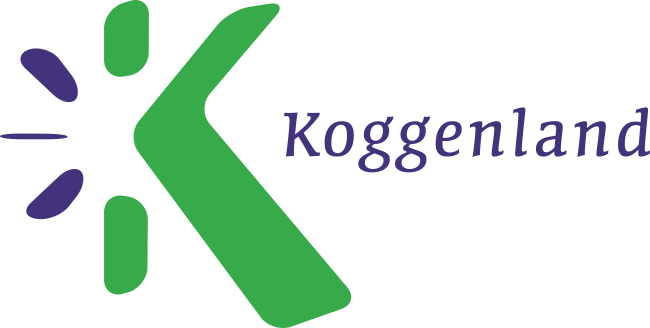
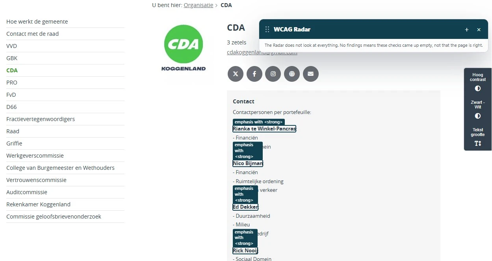
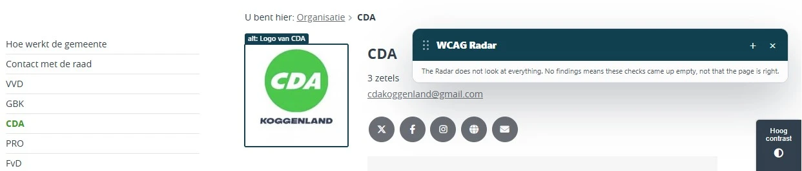
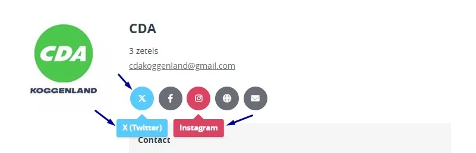
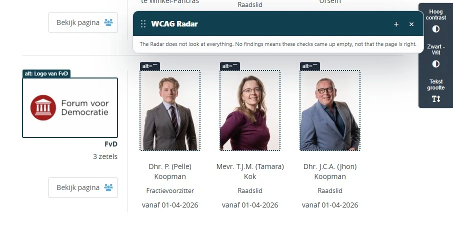
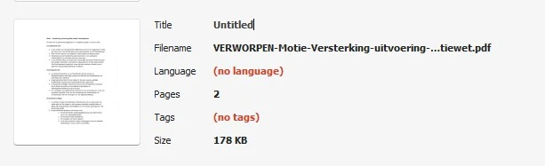
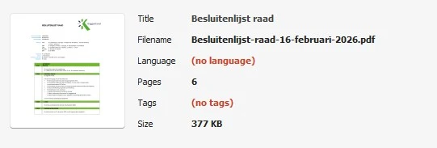
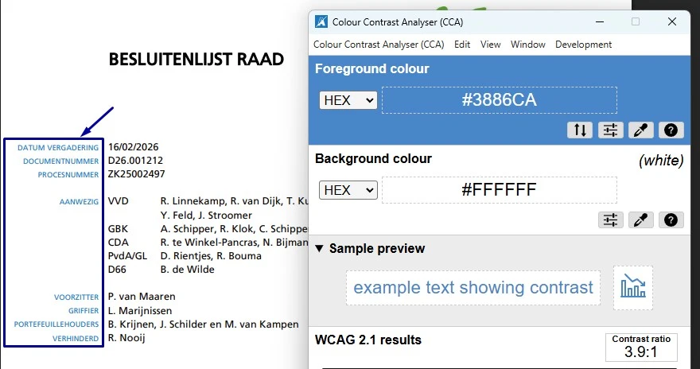

Link naar pagina: https://raad.koggenland.nl/
Geen bevindingen.
Wij hebben de content van de website raad.koggenland.nl onderzocht tussen 8 en 10 september 2026. Op dit moment is een deel van de succescriteria als voldoende beoordeeld. In dit rapport lees je welke punten nog verbetering behoeven en hoe deze kunnen worden aangepakt.
In opdracht van

Buiten scope:
Bekijk een korte presentatie (~15 min) met de belangrijkste bevindingen, cijfers en vervolgstappen, handig voor een teammeeting.
Bekijk presentatieDownload het plan van aanpak met een geprioriteerde aanpak om de gevonden problemen op te lossen.
Download plan van aanpakExporteer alle bevindingen als CSV-bestand. Je kunt het in een (online) spreadsheet inladen om met je team samen te werken.
Exporteer alle bevindingen als Jira-compatibel CSV-bestand. Je kunt het direct importeren via Jira > Issues > Import issues from CSV.
Houd per bevinding bij of het is opgelost. Je voortgang wordt opgeslagen in jouw browser. Niemand anders kan je resultaat zien.
Geen bevindingen gevonden voor dit filter.
Link naar pagina: https://raad.koggenland.nl/
Geen bevindingen.
Link naar pagina: https://raad.koggenland.nl/Over-deze-site/Contact
Geen bevindingen.
Link naar pagina: https://raad.koggenland.nl/Organisatie/CDA

Op deze pagina staan teksten die een kop zijn, maar er staat geen kopelement omheen. De tekst is met een strong-element vetgedrukt zodat die eruitziet als een kop. Het gaat onder andere om "Rianka te Winkel-Pancras:", "Nico Bijman:" en "Ed Dekker:".
Het strong-element geeft nadruk aan tekst en maakt geen kop. Wie de pagina met een schermlezer leest, krijgt deze koppen niet te zien in de koppenlijst en mist daarmee de opbouw van de pagina.
Ik lees de website met een schermlezer. Als ik door de koppen navigeer, mis ik de koppen die niet als kop in de code staan. Ik verwacht dat elke kop een echte kop is, zodat ik de opbouw van de pagina kan volgen.
Open de WCAG Radar en zet de optie "Koppen en structuur" aan. Loop daarna elke kop op de pagina langs. Krijgt een kop geen label h1 tot en met h6, dan staat die tekst niet als kop in de code.
Haal het strong-element weg en zet deze teksten in het kopelement dat bij hun niveau hoort.

In het logo staat de tekst "CDA KOGGENLAND". Het tekstalternatief is "Logo van CDA". Een tekstalternatief hoort alle zichtbare tekst uit het logo te bevatten, zodat bezoekers die de afbeelding niet zien dezelfde informatie krijgen als bezoekers die hem wel zien.
Ik lees de website met een schermlezer. Bij het logo hoor ik niet de volledige naam van de organisatie. Ik verwacht te horen wat er in het logo staat.
Open de WCAG Radar en zet de optie "Toegankelijke naam" aan. Vergelijk de toegankelijke naam van het logo met de tekst die je in het logo leest: het tekstalternatief hoort alle zichtbare tekst te bevatten.
Vul het tekstalternatief aan tot "Logo van CDA KOGGENLAND".
Onder de kop "Contactpersonen per portefeuille" staan de portefeuilles per raadslid onder elkaar, met een streepje aan het begin van elke regel. Bij "Rianka te Winkel-Pancras" zijn dat bijvoorbeeld "Financiën" en "Sociaal domein". Deze opsomming staat niet in lijstelementen: <ul>, <ol> en <li> ontbreken. Een schermlezer meldt daardoor niet dat het een lijst is en hoeveel onderdelen erin staan. Bezoekers die de pagina zien, halen die structuur wel uit de streepjes.
Hetzelfde staat op de pagina https://raad.koggenland.nl/Over-deze-site/Toegankelijkheid, in de opsomming onder "Een echt toegankelijke website sluit geen bezoekers uit".
Ik lees de website met een schermlezer. Als informatie als lijst op het scherm staat, wil ik die structuur ook horen. Ik verwacht dat mijn schermlezer meldt dat het een lijst is en hoeveel onderdelen die heeft.
Bekijk de HTML van de opsomming, of loop hem na met een schermlezer. Een opsomming die met streepjes is getypt, staat niet in <ul>- en <li>-elementen. De schermlezer meldt dan geen lijst en geen aantal onderdelen.
Zet de opsomming in lijstelementen: <ul> voor een lijst zonder volgorde of <ol> voor een lijst met volgorde, met elk onderdeel in een <li>-element.

De links naar de profielen op X en Instagram staan op de pagina als logo. Beweeg je de muis over zo'n link, of komt de toetsenbordfocus erop, dan verandert de kleur en verschijnt de naam van het platform. Die tekst heeft te weinig contrast met de achtergrond: 1,9:1 bij X en 4,2:1 bij Instagram. Voor normale tekst is 4,5:1 de ondergrens.
Bij X is ook het pictogram zelf te licht. Het contrast blijft daar onder de 3,0:1 die voor informatieve pictogrammen geldt.
Tekst en informatieve pictogrammen houden in elke toestand genoeg contrast, dus ook als de muis erop staat en als het element de toetsenbordfocus heeft.
Ik heb een visuele beperking. Als ik met de muis of het toetsenbord bij de link naar X of Instagram kom, verschijnt er tekst in een andere kleur. Ik verwacht dat die tekst leesbaar blijft.
Zoek de links met de logo's van X en Instagram. Beweeg de muis over elke link en bekijk de tekst die verschijnt. Ga daarna met de Tab-toets naar de links. Open de WCAG Radar, zet de optie "Contrast" aan en meet met de pipetten de kleur van de tekst en van de achtergrond.
Zorg dat de tekst minimaal 4,5:1 contrast heeft met de achtergrond, ook als de muis erop staat en als de link de focus heeft. Zorg dat informatieve pictogrammen in die toestanden minimaal 3,0:1 contrast houden.
Link naar pagina: https://raad.koggenland.nl/Vergaderingen/Gemeenteraad/2026/29-juni/20:00
Geen bevindingen.
Link naar pagina: https://raad.koggenland.nl/Vergaderingen/Burgemeester-en-Wethouders-vervallen/
Geen bevindingen.
Link naar pagina: https://raad.koggenland.nl/documenten
Geen bevindingen.
Link naar pagina: https://raad.koggenland.nl/documenten/Moties-en-amendementen
De bevindingen op deze pagina staan hierboven al beschreven. De PDF's die via deze pagina te openen zijn, hebben een eigen hoofdstuk onderaan dit rapport.
Link naar pagina: https://raad.koggenland.nl/Vergaderingen/Beeldvormende-commissievergadering-Sociaal-Domein/2026/14-september/19:30
Geen bevindingen.
Link naar pagina: https://raad.koggenland.nl/vergaderingen
Geen bevindingen.
Link naar pagina: https://raad.koggenland.nl/Over-deze-site/Toegankelijkheid
De bevindingen op deze pagina staan hierboven al beschreven.
Link naar pagina: https://raad.koggenland.nl/organisatie

Onder de kop "Organisatie" staan de logo's van de fracties. Het logo van "Forum voor Democratie" heeft als tekstalternatief "Logo van FvD". De afkorting 'FvD' is niet de naam die in het logo staat. Bezoekers die het logo niet zien, krijgen daardoor andere informatie dan bezoekers die het wel zien.
De toegankelijke naam van de link hoort de zichtbare naam te bevatten, zodat het doel van de link voor iedereen hetzelfde is.
Dit speelt ook bij de logo's "VVD Koggenland", "GBK Koggenland", "CDA Koggenland" en "D66 Koggenland". In het tekstalternatief van die logo's ontbreekt het woord "Koggenland".
Ik lees de website met een schermlezer. Bij het logo van Forum voor Democratie hoor ik 'Logo van FvD'. Ik verwacht de naam te horen die in het logo staat.
Open de WCAG Radar en zet de optie "Afbeeldingen en alt-tekst" aan. Vergelijk de zichtbare tekst in het logo met het tekstalternatief.
Vul het tekstalternatief aan met de naam die in het logo staat, bijvoorbeeld "Logo van Forum voor Democratie". Zorg dat de toegankelijke naam van de link diezelfde naam bevat.
Link naar pagina: https://raad.koggenland.nl/Vergaderingen/Gemeenteraad/
Geen bevindingen.
Link naar pagina: https://raad.koggenland.nl/Vergaderingen/Agendacommissie/Komende-vergaderingen/
Geen bevindingen.
Link naar pagina: https://raad.koggenland.nl/Documenten/VERWORPEN-Motie-Versterking-uitvoering-Wet-taaleis-Participatiewet-1.pdf

In de eigenschappen van dit PDF-document staat geen titel. Een PDF-document hoort een titel te hebben die zegt waar het document over gaat, en die titel hoort in de titelbalk te staan in plaats van de bestandsnaam. Zo ziet een bezoeker meteen welk document hij open heeft.
Ik lees PDF's met een schermlezer. Als ik een PDF open, hoor ik alleen een bestandsnaam zoals 'document123.pdf'. Ik verwacht een duidelijke titel te horen, zodat ik weet wat ik open.
Open de PDF in Adobe Acrobat Pro en ga naar Bestand, Eigenschappen, tabblad Beschrijving. In het veld Titel hoort het onderwerp van het document te staan, niet de bestandsnaam. Controleer daarna bij Beginweergave, Tonen of "Documenttitel" is gekozen, zodat de titel in de titelbalk staat. Luister met NVDA of VoiceOver of de titel wordt voorgelezen zodra de PDF opent. Draai PAC voor een automatische controle.
Zet een beschrijvende titel in de eigenschappen van het bestand: Bestand, Eigenschappen, tabblad Beschrijving. Kies daarna bij Beginweergave dat de documenttitel in de titelbalk komt te staan.
In de metagegevens van deze PDF staat geen taal. Met een ingestelde taal geeft een schermlezer de tekst in de juiste uitspraak weer. De taal stel je in bij de eigenschappen van het bestand.
Ik lees PDF's met een schermlezer. Zonder ingestelde taal raadt mijn schermlezer de uitspraak en klinkt de tekst verkeerd. Ik verwacht dat in elke PDF de taal staat.
Open de PDF in Adobe Acrobat en ga naar Bestand, Eigenschappen, tabblad Geavanceerd. Controleer of bij Leesopties, Taal de taal van het document staat. Laat het document daarna voorlezen met een schermlezer en luister of de uitspraak klopt.
Stel de taal in bij de eigenschappen van het bestand: Bestand, Eigenschappen, tabblad Geavanceerd, veld Taal.
Dit PDF-document heeft geen codes. Zonder codes krijgt een schermlezer de inhoud niet door. Daardoor is ook een volledige beoordeling niet mogelijk: de succescriteria die over de codelaag gaan, zoals koppen en tekstalternatieven bij afbeeldingen, zijn niet te beoordelen. Zodra de codes er zijn, kunnen er nieuwe punten zichtbaar worden.
Ik zie het document niet en lees met een schermlezer. Een PDF zonder codes levert mijn schermlezer niets om voor te lezen. Ik verwacht een PDF met codes, zodat ik de hele inhoud kan lezen.
Open de PDF in Adobe Acrobat Pro en bekijk de codeboom via Beeld, Tonen en verbergen, Navigatievensters, Codes. Koppen, lijsten, tabellen en formuliervelden die je ziet, horen als code te bestaan: <H1> tot en met <H6>, <L>, <Table> met <TH>, <TR> en <TD>, en <Form>. Draai daarna de ingebouwde toegankelijkheidscontrole en PAC. Lees het document tot slot regel voor regel na met een schermlezer en kijk of de volgorde klopt.
Voeg codes toe die de structuur van het document weergeven.
Link naar pagina: https://raad.koggenland.nl/Documenten/Besluitenlijst-raad-16-februari-2026.pdf

In de metagegevens van deze PDF staat geen taal. Met een ingestelde taal geeft een schermlezer de tekst in de juiste uitspraak weer. De taal stel je in bij de eigenschappen van het bestand.
Ik lees PDF's met een schermlezer. Zonder ingestelde taal raadt mijn schermlezer de uitspraak en klinkt de tekst verkeerd. Ik verwacht dat in elke PDF de taal staat.
Open de PDF in Adobe Acrobat en ga naar Bestand, Eigenschappen, tabblad Geavanceerd. Controleer of bij Leesopties, Taal de taal van het document staat. Laat het document daarna voorlezen met een schermlezer en luister of de uitspraak klopt.
Stel de taal in bij de eigenschappen van het bestand: Bestand, Eigenschappen, tabblad Geavanceerd, veld Taal.
Dit PDF-document heeft geen codes. Zonder codes krijgt een schermlezer de inhoud niet door. Daardoor is ook een volledige beoordeling niet mogelijk: de succescriteria die over de codelaag gaan, zoals koppen en tekstalternatieven bij afbeeldingen, zijn niet te beoordelen. Zodra de codes er zijn, kunnen er nieuwe punten zichtbaar worden.
Ik zie het document niet en lees met een schermlezer. Een PDF zonder codes levert mijn schermlezer niets om voor te lezen. Ik verwacht een PDF met codes, zodat ik de hele inhoud kan lezen.
Open de PDF in Adobe Acrobat Pro en bekijk de codeboom via Beeld, Tonen en verbergen, Navigatievensters, Codes. Koppen, lijsten, tabellen en formuliervelden die je ziet, horen als code te bestaan: <H1> tot en met <H6>, <L>, <Table> met <TH>, <TR> en <TD>, en <Form>. Draai daarna de ingebouwde toegankelijkheidscontrole en PAC. Lees het document tot slot regel voor regel na met een schermlezer en kijk of de volgorde klopt.
Voeg codes toe die de structuur van het document weergeven.

Op pagina 1 van dit PDF-document staat blauwe tekst (#3886CA) op een witte achtergrond, bijvoorbeeld "DATUM VERGADERING" en "DOCUMENTNUMMER". Het contrast is 3,9:1 en dat is te weinig. De ondergrens voor deze tekst is 4,5:1.
Ik heb weinig zicht en heb genoeg contrast nodig. Zonder dat contrast kan ik de tekst niet lezen.
Meet de contrasten met de Colour Contrast Analyser. De ondergrens is 4,5:1 voor normale tekst en 3,0:1 voor grote tekst, dus vanaf 24px of vanaf 18,7px vet. Kijk ook naar tekst op achtergrondafbeeldingen, watermerken, plaatshouders in formuliervelden en voetnoten.
Pas de kleur van de tekst of van de achtergrond aan, zodat het contrast minimaal 4,5:1 is. Controleer de nieuwe combinatie met de Colour Contrast Analyser op een schermafdruk van de pagina voordat je de PDF publiceert.
Onze rapporten zijn anders. Bij het bespreken van de gevonden problemen volgen wij niet de structuur van de norm, maar die van jouw website of app. Hierdoor kun je gewoon per pagina of scherm aan de slag gaan. Wel zo makkelijk! Je vindt verderop een overzicht van alle pagina’s met problemen.
We geven je bij elk gevonden issue een paar voorbeelden, maar niet een complete lijst. Controleer zelf of het probleem ook nog op andere plekken voorkomt. Zie het rapport als een leidraad.
Dit onderzoek laat zien in hoeverre de website op dit moment voldoet aan WCAG 2.2, niveau A en AA. WCAG staat voor Web Content Accessibility Guidelines. Dit is de internationale norm voor digitale toegankelijkheid. De Europese norm EN 301 549 bevat alle eisen van WCAG op niveau A en AA.
In dit rapport hebben we korte beschrijvingen van de succescriteria uit de norm opgenomen, met een algemene uitleg erbij. Wil je ze helemaal lezen? Bekijk dan de documentatie van WCAG.
We gebruiken de onderzoeksmethode WCAG-EM van het W3C. Het proces ziet er als volgt uit:
Het grootste deel van het onderzoek doen we met de hand. Voor een deel van de toegankelijkheidseisen gebruiken we automatische tools als ondersteuning, zoals axe-core en Chrome Developer Tools.
Dit rapport helpt je om de toegankelijkheid van je website te verbeteren. Maar let op: het is geen definitieve, volledige lijst van alle aanwezige toegankelijkheidsproblemen. Dat zit zo:
Ten eerste is het onderzoek gebaseerd op een steekproef. Die is op een betrouwbare manier genomen, en de meeste problemen zullen daardoor zeker aan het licht komen. Toch kan een probleem net buiten de steekproef vallen. Bij een volgend onderzoek kan het wel ontdekt worden.
We beoordelen vanuit het principe van falsificatie. Dat houdt in dat we proberen te bewijzen dat iets niet waar is, in plaats van te bevestigen dat het klopt. ‘Voldoet’ betekent daarom dat we geen reden hebben gevonden om een punt af te keuren. Maar als we later wél een reden vinden, kan het alsnog worden afgekeurd.
Het komt voor dat de beoordeling van een succescriterium op detailniveau verandert. De norm beschrijft namelijk niet élk mogelijk scenario. Samen met andere onderzoeksbureaus overleggen we hoe we met bepaalde situaties omgaan. Zo kan iets dat nu wordt afgekeurd, soms bij een volgend onderzoek worden goedgekeurd en andersom.
Ten slotte kan het gebeuren dat bij het oplossen van een probleem onbedoeld een nieuw toegankelijkheidsprobleem ontstaat. Dat komt dan bij een volgend onderzoek pas naar voren.
Alle gevonden toegankelijkheidsproblemen staan onder Gevonden problemen. Je kunt de bevindingen filteren op:
Je kunt je voortgang op twee manieren bijhouden:
Bij elke bevinding verschijnt een link-icoon wanneer je er met de muis overheen gaat. Klik op dit icoon om de directe link naar die bevinding te kopiëren. Je kunt deze link plakken in een e-mail of chatbericht, bijvoorbeeld om een vraag te stellen aan Proper Access over een specifiek punt.